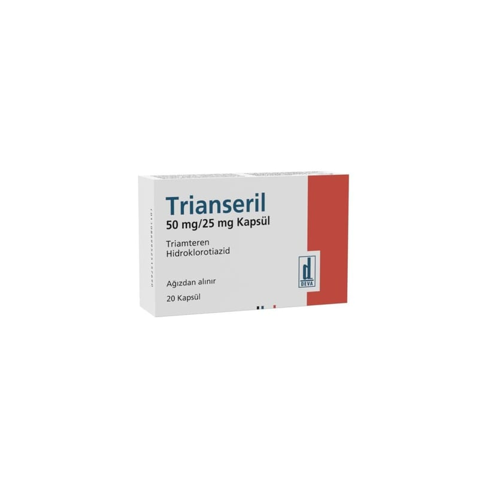

Trianseril 50 mg/25 mg Kapsül, 500 Adet

Ne için kullanılır
KT · Bölüm 1TRİANSERİL etkin madde olarak her bir kapsülde 50 mg triamteren ve 25 mg hidroklorotiyazid içerir.
TRİANSERİL mavi renkli (No:2) sert jelatin kapsüller içerisinde sarı renkli, kokusuz, homojen görünüşlü tozdur. 20 kapsül içeren blister ambalajlarda kullanıma sunulmaktadır.
TRİANSERİL diüretikler (idrar söktürücü) olarak adlandırılan bir ilaç grubuna dahildir.
Hidroklorotiyazid sodyum, potasyum, klorür ve su atılımının artmasına neden olur.
Triamteren sodyum, klorür ve su atılımında artışa neden olurken potasyum atılımını azaltır.
Bu nedenle iki etken maddenin kombinasyonu sodyum, klorür ve idrar atılımını artırır (hidroklorotiyazid tarafından) ve potasyum kaybı zayıflatılır (triamteren tarafından).
Hidroklorotiyazid ayrıca antihipertansif etkiye sahiptir.
TRİANSERİL aşağıdakilerin tedavisinde kullanılır: Yüksek tansiyon Kronik kalp yetmezliği Kalp, karaciğer veya böbrek hastalıklarına bağlı olarak dokuda sıvı birikmesi
TRİANSERİL yetişkinlerde kullanılır.